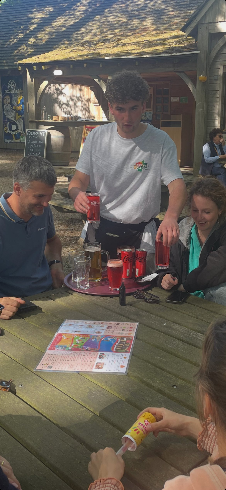
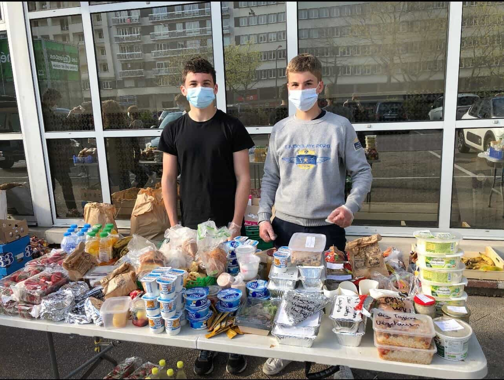
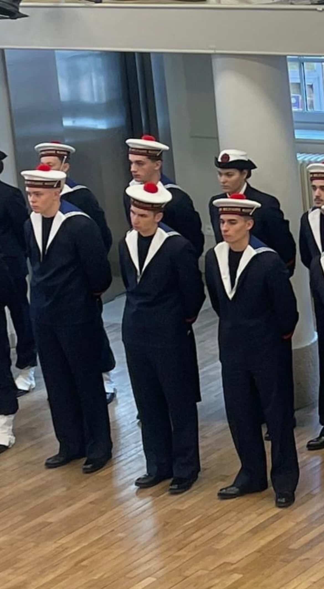

Un parcours professionnel à 20 ans, c'est forcément un parcours largement bénévole et associatif, mêlé à quelques expériences salariées de saisonnier. Mais c'est aussi, à condition d'y prêter attention, un parcours qui dit déjà beaucoup. Voici les sept expériences qui composent le CV de Maxime Lorne, chacune apportant une compétence transférable distincte.
Le CV en bref
Identité
Maxime Lorne · 20 ans · Étudiant BUT GEA 1ère année · IUT d'Orléans · Mobilité Centre-Val de Loire / Pays de la Loire
Recherche
Alternance commerce / marketing / management — rentrée 2026 · Contrat d'apprentissage privilégié · 12 ou 24 mois
Compétences clés
Excel intermédiaire-avancé · Communication orale · Coordination d'équipe · Gestion de communauté Instagram (37 000+ abonnés) · Anglais B1 · Espagnol A2 · Permis B
Soft skills
Leadership empathique · Endurance mentale · Discipline · Empathie active · Sens du collectif · Résistance au stress
Les expériences en détail
Stage de 1ère année · Vendeur · Damart (Orléans)
19 janvier — 13 février 2026 · 35 h/semaine · Stage validé
Quatre semaines en immersion au magasin Damart d'Orléans (13 rue Bannier) dans le cadre de la SAÉ 2.04. Tutrice de stage : Katia Baubit, responsable de boutique. Tuteur universitaire : M. Baudenon, professeur d'anglais à l'IUT. Mission complète : accueil client, conseil personnalisé en s'appuyant sur la méthode DISC, encaissement, inventaires de stocks suite aux démarques de soldes, merchandising et remise en place des vitrines, mise à jour des informations clients dans les outils internes. Le rapport de stage approfondit le processus de vente observé et propose des pistes d'amélioration concrètes.
Groom · Galeries Lafayette
Saison 2025 · Ponctuel · Costume rouge & dorures

Le costume officiel de groom — accueil clientèle pendant les périodes commerciales fortes.
Mission ponctuelle de groom dans une enseigne haut-de-gamme. Accueil clientèle en tenue d'apparat (costume rouge à galons dorés, gants blancs), orientation des visiteurs, représentation de l'enseigne pendant les périodes de forte affluence. Une mission qui apprend la posture autant que le service. Tenue, prestance, sourire, disponibilité instantanée.
Serveur · L'Auberge du Trappeur
Mai, juillet et août 2026 · Saisonnier · Service en salle

En service à l'Auberge du Trappeur — plateau, sourire et flux soutenu.
Saisonnier en restauration sur l'ensemble des ponts de mai et la saison estivale complète. Service en salle, prise de commande, gestion du flux clients en extérieur (terrasse forestière), travail en équipe avec la cuisine. Le genre d'expérience qui apprend la résistance au stress et la gestion du rythme bien mieux que n'importe quel cours théorique.
Bénévole · Maraude « Un repas pour tous » (Le Mans)
2023-2024 · 1 an et demi · Tous les dimanches soir

Devant la table de distribution, un dimanche soir au Mans — masques, paniers, échanges.
Un an et demi d'engagement dominical au sein de cette association manceau. Chaque dimanche soir, en équipe : collecte des denrées alimentaires, préparation des paniers, distribution aux sans-abris et familles dans le besoin, écoute. Une expérience exigeante qui demande une grande force émotionnelle et une logistique rigoureuse.
Préparation Militaire Marine (PMM) · 2e RIMa
6 mois · Régiment d'Infanterie de Marine · Tenue Marine nationale

En formation Préparation Militaire Marine — uniforme bleu marine, bachi à pompon rouge.
Engagement intensif au sein du 2e RIMa pour confronter ses valeurs à un cadre strict. Discipline collective, respect rigoureux de l'autorité, dépassement de soi. Des valeurs que Maxime souhaitait retrouver et consolider après la fin de ses responsabilités de chef scout. Une expérience de discipline pure qui contraste avec l'horizontalité du scoutisme.
Chef d'équipe · Scoutisme
10 ans, dont 3 ans chef d'équipe · Bénévolat continu
L'engagement de fond : dix années dans le scoutisme, dont trois comme chef d'équipe. Animation de jeunes adolescents sur le terrain, organisation et gestion d'événements scouts complexes, encadrement et sécurité, transmission des valeurs en autonomie en milieu naturel. C'est ici que se sont forgés tous les réflexes de leadership empathique. Et c'est ici que Maxime a découvert une dimension humaine saine de la hiérarchie.
Président de l'association · « La 4L sans freins »
Depuis fin 2025 · Création loi 1901 · Cap sur le 4L Trophy 2027

La bannière officielle du site 4l-sans-freins.fr — édition n° 047 / 2027, cap sur le Maroc.
Aujourd'hui, Maxime traduit ses compétences de gestionnaire en action en occupant le poste de Président d'une association en cours de création. Son objectif : participer à la mythique course du 4L Trophy 2027 afin d'acheminer des fournitures scolaires, médicales et sportives à plus de 20 000 enfants déshérités dans le désert marocain. Ce projet permet de développer des compétences clés en recherche de partenariats, en budget, en communication et en gestion d'équipe. En parfaite adéquation avec la formation BUT GEA et la spécialité GEMA visée.
Découvrir « La 4L sans freins »
L'association compte 4 membres fondateurs. Maxime y occupe le poste de Président : pilotage général, représentation, recherche de partenariats. Objectif : 4L Trophy 2027, distribution de fournitures à 20 000+ enfants au Maroc. Compétences développées sur ce projet : sponsoring, communication digitale (TikTok, Instagram), budget prévisionnel, gestion d'équipe sur 18 mois.
Dix ans de scoutisme, 1 500 km sur Compostelle, dix-huit mois de maraudes : la trame n'est pas faite de stages, mais elle est faite de promesses tenues.
La logique du parcoursCe que ces expériences disent
Aucune de ces sept expériences n'est, isolément, un argument de poids pour un recruteur. Mais leur cumul cohérent raconte quelque chose de précis. Un étudiant capable de s'engager longtemps sur un projet, de fonctionner en équipe sans hiérarchie formelle, et d'aller chercher l'expérience là où elle se trouve. Y compris loin du salaire et du confort.
C'est précisément cette caractéristique qui intéresse un recruteur d'alternance. Pas une PME quelconque, mais une PME où l'on cherche un alternant capable de s'investir vraiment, pas seulement de remplir un contrat.
Recherche d'alternance · rentrée 2026
Profil recherché
Pour la rentrée 2026, Maxime cherche une alternance dans les domaines suivants :
- Commerce — assistant commercial, business developer junior, chargé de clientèle PME
- Marketing — marketing opérationnel, community management structuré, événementiel
- Management d'activité — assistant chef de projet, coordination de point de vente, support manager
Privilégiée : PME du Centre-Val de Loire ou des Pays de la Loire. Disponibilité immédiate pour entretiens. Contrat d'apprentissage de préférence.
Pour aller plus loin, voir la rubrique Contact qui liste les coordonnées et permet de prendre rendez-vous.